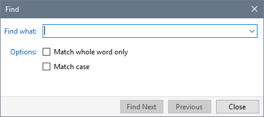
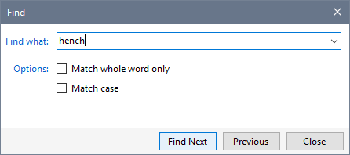
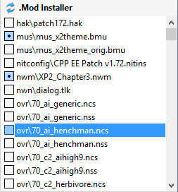
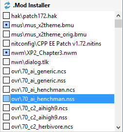
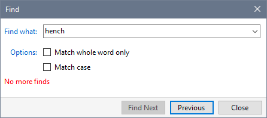

You can locate files in a Mod's Contents or Details List.
- Select the Mod name you want to search.
- Specify which area to search by clicking in the Contents or Details List.
- Press Ctrl+F or click Find from the Edit menu.

- Type in the text you want to use locate the files you want to select and click Find Next.

- The first occurrence of the file is selected in the list. Each time you click Find Next, the next matching item is selected.


- The Find dialogue tells you when there are no more occurrences of files that match your criteria.

- You can click Previous to search in the reverse direction.
Related Topics
Find files in your Profile
Find files in Contents or Details
Find text within a file
Find and rename Mods